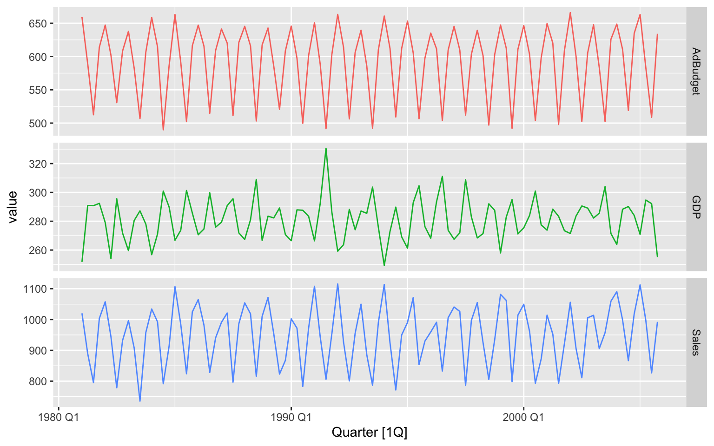

1 Introduction
This is where you introduce the main ideas of your thesis, and an overview of the context and background.
In a PhD, Chapter 2 would normally contain a literature review. Typically, Chapters 3–5 would contain your own contributions. Think of each of these as potential papers to be submitted to journals. Finally, Chapter 6 provides some concluding remarks, discussion, ideas for future research, and so on. Appendixes can contain additional material that don’t fit into any chapters, but that you want to put on record. For example, additional tables, output, etc.
1.1 Quarto
In this template, the rest of the chapter shows how to use quarto. The big advantage of using quarto is that it allows you to include your R or Python code directly into your thesis, to ensure there are no errors in copying and pasting, and that everything is reproducible. It also helps you stay better organized.
For details on using Quarto, see http://quarto.org.
1.2 Data
Included in this template is a file called sales.csv. This contains quarterly data on Sales and Advertising budget for a small company over the period 1981–2005. It also contains the GDP (gross domestic product) over the same period. All series have been adjusted for inflation. We can load in this data set using the following code:
Any data you use in your thesis can go into the data directory. The data should be in exactly the format you obtained it. Do no editing or manipulation of the data prior to including it in the data directory. Any data munging should be scripted and form part of your thesis files (possibly hidden in the output).
1.3 Figures
Figure 1.1 shows time plots of the data we just loaded. Notice how figure captions and references work. Chunk names can be used as figure labels with fig- prefixed. Never manually type figure numbers, as they can change when you add or delete figures. This way, the figure numbering is always correct.

1.4 Results from analyses
We can fit a regression model to the sales data.
If y_t denotes the sales in quarter t, x_t denotes the corresponding advertising budget and z_t denotes the GDP, then the resulting model is: y_t = \beta x_t + \gamma z_t + \varepsilon_t \tag{1.1} where \hat{\beta} = 1.85, and \hat{\gamma} = 1.04. We can reference this equation using Equation 1.1.
1.5 Tables
We can also make a nice summary table of the coefficients, as shown in Table 1.1
| Coefficient | Estimate | P value |
|---|---|---|
| (Intercept) | -438.98 | 0.02 |
| GDP | 1.04 | 0.02 |
| AdBudget | 1.85 | 0.00 |
Again, notice the use of labels and references to automatically generate table numbers.